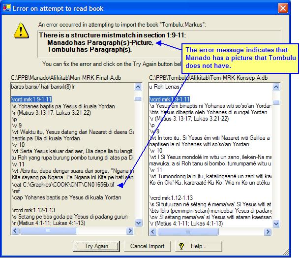

OurWord Help
Import
Error - Structure Mismatch
This error occurs when the contents of a section differ significantly from the Front translation. OurWord expects each section to have the same number of pictures (if any); and if there are paragraphs before (or after) the picture in the front, then there should likewise be paragraphs before (or after) the picture in the translation.
OurWord has this requirement so that it can correctly lay out the side-by-side display. It is our assumption that in a Front Translation strategy, the vernacular will follow the Front closely enough that such structure will not be an issue.
An example of this error:

The cure is to examine the front to see what is different, and then edit the vernacular so that there are no differences in structure. If you are unsure, go ahead and attempt a fix and Try Again, and OurWord will let you know if you still have work to do.
After you make the correction, click on the Try Again button to instruct OurWord to resume importing the book; or alternatively you can click on Cancel to abandon the import and fix it in some other editor.
Updated as of Version 1.0.